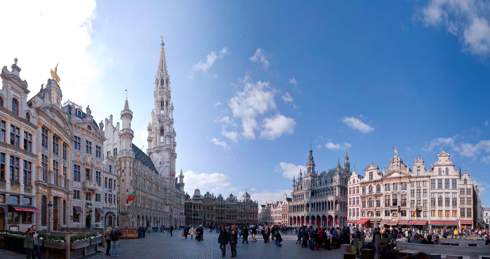

Sumérgete en la encantadora ciudad de Bruselas, conocida por su arquitectura histórica y su deliciosa gastronomía. Visita la Grand Place, maravíllate con el Atomium y degusta auténticos chocolates belgas. Explora el encanto de los barrios como Sablon y disfruta de la cerveza local. Precio: €380 (incluye alojamiento y tour gastronómico).
Descubre la riqueza cultural de Bruselas explorando museos como el Magritte Museum y el Museo Real de Bellas Artes. Disfruta de la belleza arquitectónica de la ciudad, desde la Manneken Pis hasta el Palacio Real de Bruselas. Explora los mercados locales y prueba los deliciosos gofres y patatas fritas.
Este viaje te sumergirá en la vibrante vida de Bruselas, donde la historia se encuentra con la modernidad. ¡Prepárate para disfrutar de una experiencia única y deliciosa en la capital belga!